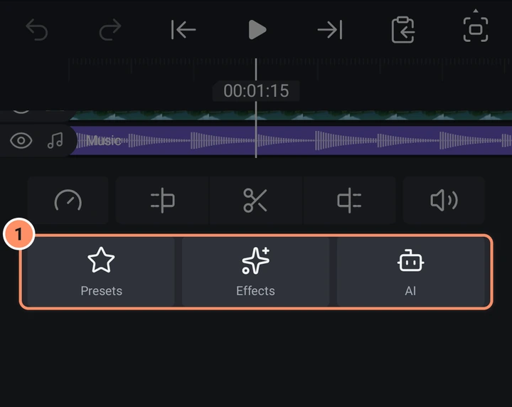
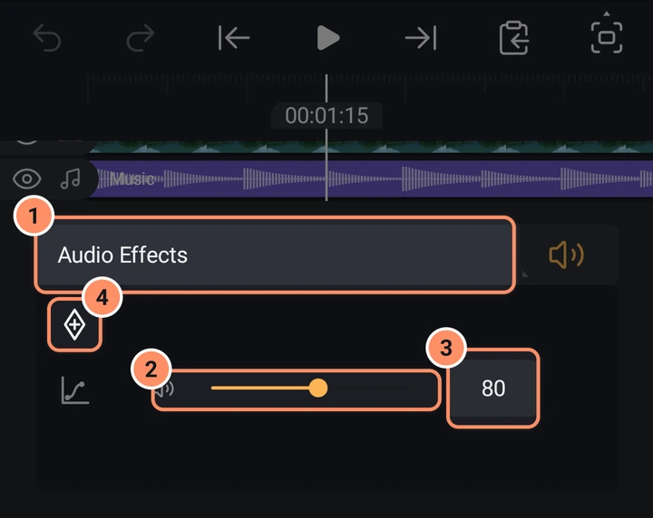
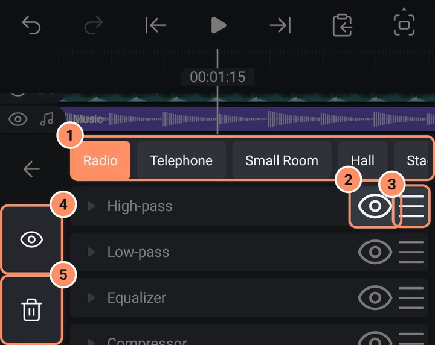

Audio
Magdagdag ng musika at mga tunog, itakda ang volume, gumamit ng audio effects at voice filters, magmarka ng beats at gawing pagsasalita ang teksto, lahat offline.
Sa pahinang ito
Paano maglagay ng tunog sa isang proyekto
Walang built-in na music o sound library ang AbsentMotion: ginagamit mo ang mga audio file sa iyong telepono, ang tunog ng iyong mga bidyo at ang mga boses na gawa mula sa teksto.
- Idagdag, Audio tab: musika at mga tunog na naka-store sa iyong telepono. I-tap ang tile para marinig ito at i-tap ang + strip nito para idagdag ito sa playhead. Binubuksan ng View all ang file picker. Humihingi ang app ng pahintulot na magbasa ng audio files sa unang pagkakataon.
- Teksto sa boses (parehong tab): tingnan sa ibaba.
- Tumutugtog ang tunog ng isang video clip kasama ng clip. Hinihiwalay ito ng I-extract ang audio sa layer menu tungo sa sarili nitong audio layer.
- Ang mga bidyong na-record gamit ang in-app na kamera ay may tunog ng mikropono, kung pinayagan mo ito.
- Ang epektong Mga Blip ng Teksto ay nagbibigay sa isang text layer ng maikling blip para sa bawat letrang tina-type nito: tingnan ang Teksto at mga font.
Ang audio layer ay pinangalanan ayon sa file at nagsisimula sa playhead. Laging sumusunod ang haba ng proyekto sa dulo ng huling layer, kaya pinapahaba ng mahabang tunog ang proyekto at ang export.
Sa timeline, ang audio layer ay isang violet na bar na may waveform nito. Ang mga tool ay Bilis, trim at split, Volume, Mga preset, Mga epekto, Markahan ang mga beat at AI. Nasa loob ng Mga epekto ang mga voice filter. Ang AI ay may Bawasan ang ingay at Auto captions para sa napiling clip.

Volume
Binubuksan ng Volume (ang speaker icon) ang volume panel para sa mga sound clip at bidyo. Ang slider ay mula 0 % hanggang 150 % (default 100 %) at may value box. Maaari itong i-animate gamit ang keyframe at easing buttons, na siyang paraan para gumawa ng fade-ins at fade-outs. Ang clip na nasa 0 % na walang keyframe ay naka-mute, at ipinapakita ito ng speaker icon.
Ang unang button ng panel, Mga epekto sa audio, ay nagbubukas ng effects ng clip.

Sumusunod ang tunog ng clip sa bilis nito (tingnan ang Photos, video and speed). Ang mga source na may higit sa dalawang channel ay hinahalo pababa sa stereo.
Level meter
Habang nagpe-play ang proyekto, ipinapakita sa isang meter ang level ng buong proyekto. Sa telepono, ito ang manipis na linya sa ilalim ng play bar: lumalawak mula sa gitna ang kaliwang kalahati para sa kaliwang channel at ang kanang kalahati para sa kanang channel, at nagiging pula ang isang panig kapag nag-clip ito. Ang tablet na hawak nang pahiga ay may manipis ding meter sa kaliwang itaas ng preview, at sa computer ay makikita ito sa kaliwang bahagi ng window, sa kanan ng mga button at sa ilalim ng pangalan ng proyekto: isang bar na L at isang bar na R na may level ng buong proyekto sa dB sa ilalim ng mga ito.
Audio effects
Para sa sound clip, binubuksan ng Mga epekto ang effects library na nasa Audio category na. Para sa video clip, may Audio category sa normal na library. Sa loob ng volume panel, binubuksan ng Mga epekto sa audio button ang listahan. Sa listahan:
- Pinapalitan ng mga preset chip sa itaas ang buong chain: Radyo, Telepono, Maliit na silid, Hall, Estadyum, Ilalim ng tubig, Echo, Bass boost, Kalinawan ng boses at Noise gate.
- Bawat row ay may pangalan, mata (Bypass sa effect na iyon) at grip (Muling ayusin: ang order ay ang processing order).
- Nag-aalok ang Magdagdag ng epekto sa audio ng sampung effect sa ibaba. Ang isang clip ay maaaring maghawak ng hanggang 16 units: ang bawat effect ay nagkakahalaga ng 1, ang Voice Filter ay nagkakahalaga ng 7.
- Ang mga button sa kaliwang column ay Bypass sa lahat ng effect nang sabay o Burahin lahat.

Bawat effect ay may Mix slider (0 hanggang 100 %) at sarili nitong mga slider. I-tap ang value para i-type ito.
| Effect | Mga setting (range, default) |
|---|---|
| Equalizer | Isang low shelf, tatlong middle band at isang high shelf. Low Freq 20 hanggang 1000 Hz (120), Low Gain, Mid 1 hanggang 3 Freq (400, 1500, 5000 Hz), Gain at Q (0.1 hanggang 10), High Freq 1000 hanggang 20000 Hz (10000), High Gain. Ang mga gain ay -24 hanggang 24 dB. |
| Low-pass | Cutoff 20 hanggang 20000 Hz (5000), Resonance 0.1 hanggang 10 (0.71), Slope 12 o 24 dB/oct |
| High-pass | Cutoff (200), Resonance, Slope, tulad sa itaas |
| Reverb | Room Size, Damping, Wet, Dry, Width (0 hanggang 100 %), Pre-delay 0 hanggang 200 ms |
| Echo | Time 1 hanggang 2000 ms (250), Feedback 0 hanggang 95 %, Echo Level, Ping-pong, Low Cut 20 hanggang 2000 Hz |
| Compressor | Threshold -60 hanggang 0 dB (-18), Ratio 1 hanggang 20 (4), Attack, Release, Knee 0 hanggang 24 dB, Makeup 0 hanggang 24 dB |
| Noise gate | Threshold -100 hanggang 0 dB (-50), Attack, Hold, Release, Range 0 hanggang 100 dB |
| Mataas na pitch | Amount 0 hanggang 12 semitones (5), nagshi-shift pataas |
| Mababang pitch | Amount 0 hanggang 12 semitones (5), nagshi-shift pababa |
| Voice Filter | Pitch -12 hanggang 12 semitones, Bass, Treble, Muffle, Thin, Fullness, Echo, Reverb, Ping-pong |
Ang reverb at echo ay patuloy na tumutunog pagkatapos matapos ang clip, nang hanggang sampung segundo, at nagfa-fade out. Ang limiter sa dulo ng chain ay laging naka-on at hindi maaaring i-edit; pinipigilan nito ang kabuuang tunog na mag-clip (ang ceiling ay -1 dB).
Voice filters
Buksan ang Effects > Voice filters para makita ang sampung boses: Helium, Malalim, Bass boost, Buong boses, Kalinawan ng boses, May echo, Ethereal, Ilalim ng tubig, Murang mic at Telepono. Ang pagpili ng isa ay nagtatakda ng isang Voice Filter effect sa clip, na maaari mong i-fine tune sa audio effects. Pinapalitan ng pagpili ng ibang boses ang nauna.
Reduce noise
Binabawasan ng AI tool para sa mga audio clip ang background noise sa telepono: tingnan ang AI tools.
Mark Beats
Ang Markahan ang mga beat ay isang tile sa mga tool ng audio layer, at isang entry sa layer menu ng anumang clip na may tunog. Pinakikinggan nito ang clip na iyon lang at nagdadagdag ng bookmark sa bawat beat na mahahanap nito (ang tempo ay maaaring nasa pagitan ng 60 at 180 beats per minute at ang mga beat ay dapat sumunod sa steady grid). Pagkatapos, i-cut ang iyong bidyo sa mga bookmark: sila ay snap points sa timeline. Ang mga epekto ng Beat (Beat Zoom, Beat Shake, Flash sa Beat at iba pa) at ang Mga particle na naka-set sa Sa Beat ay gumagalaw sa mga bookmark na ito; kapag walang bookmark, sinusunod nila ang kanilang BPM setting. Sinasabi nito ang "N beats marked", "No new beats found" o "Beats could not be found".
Text to Speech
Ang Idagdag, Audio, Teksto sa boses ay ginagawang spoken audio ang teksto gamit ang mga boses na nasa Android na sa iyong telepono. Gumagana ito offline at hindi gumagamit ng anumang online service.
- Isang text box ("Type what the voice says").
- Wika at Boses (ang mga boses ay pinangalanang "Voice 1", "Voice 2" at iba pa para sa bawat wika). Ang mga boses na naka-install lang sa telepono ang nakalista, at ang mga boses na nangangailangan ng internet ay nakatago. Kung wala, sinasabi ng app ang "No offline voices on this device". Maaari kang magdagdag ng mga boses sa sariling text to speech settings ng iyong telepono.
- Bilis at Pitch, 50 % hanggang 200 % (default 100 %).
- Binibigkas ng Preview ang teksto nang walang idinadagdag. Gumagawa ang Idagdag ng audio layer sa playhead, na pinangalanan ayon sa mga unang character ng teksto.
Sound sa iyong export
Ang mix ng bawat naririnig na clip (kasama ang volume, keyframes, speed at effects) ay ini-render kapag nag-export ka ng bidyo, at maaari ka ring mag-export ng tunog lang: tingnan ang Export. Para i-save ang tunog ng isang video file nang hindi nagbubukas ng proyekto, gamitin ang I-extract ang audio sa tab na Mga tool: tingnan ang Ang home screen. Tahimik ang mga nakatagong layer. Kung hindi mabasa ang tunog ng isang file, sasabihin ito ng app pagkatapos ng export at tahimik ang clip na iyon.